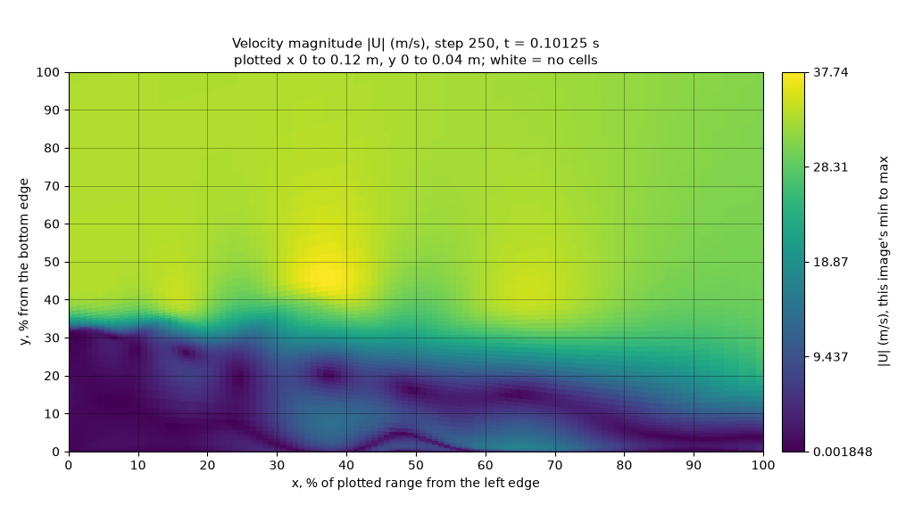
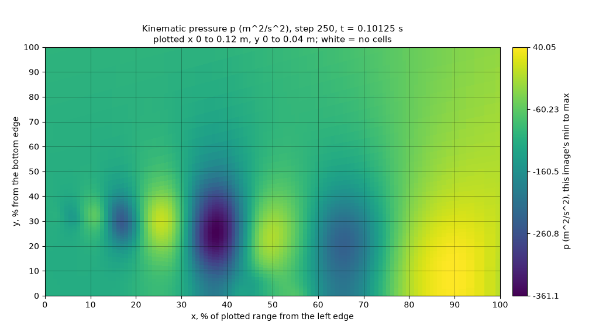

최신 보고서
11월 3일
잘못된 설정 시험 2: 실행 29쌍, 요청 전에 고정한 계획, 같은 이미지를 보는 기준선. 모델이 규칙보다 낫다는 것은 보이지 않음
근거 자료: 잘못된 설정 시험 2
PythonFOAM 포크 · PODFoam · llama.cpp
PythonFOAM의 PODFoam 예제에 선택형으로 붙인 관찰 기능입니다. OpenFOAM이 도는 동안 Python이 |U|와 p를 이미지로 그리고, 같은 노드에서 도는 이미지 읽는 모델에게 무엇이 보이는지 묻습니다. 답은 기록만 하고, 솔버로 돌려보내지 않습니다. 실행 방법은 README에 있습니다.


모델은 따로 적지 않으면 Gemma 4 12B입니다. 모델은 위의 이미지 두 장, 또는 그런 이미지의 짧은 시퀀스와 질문 하나를 받습니다.
| 질문 | 어떻게 됐나 | 판정 |
|---|---|---|
| 어디가 가장 빠르고, 어디가 압력이 가장 낮은가? | 대부분의 이미지에서 맞는 자리를 짚습니다. 늘 같은 자리를 찍는 것보다 훨씬 자주 맞힙니다. | 됨 |
| 이미지 방식이 중요한가? | 그렇습니다. 이미지 한 장에 필드 하나를 그리고 축을 백분율로 적으면 모델 넷이 48장 중 45–48장에서 가장 빠른 유동과 가장 낮은 압력을 둘 다 맞혔습니다. 솔버의 원래 두 패널 이미지로는 2–17장이었습니다. | 매우 중요 |
| 솔버가 도는 동안에도 되나? | 됩니다. 250단계마다 요청하면 계산 시간이 모델에 요청을 보내지 않은 같은 실행보다 1 % 미만 늘어납니다. 솔버는 두 실행에서 똑같은 파일을 썼습니다. | 됨 |
| 스냅샷 사이에 유동이 빨라지나, 느려지나? | 최대 속도 변화가 2 % 이상이면 읽습니다. 더 작은 변화는 대부분 잘못 읽습니다. | 뚜렷한 변화만 됨 |
| 이 계산이 곧 터지나? | 경고는 길어야 터지기 다섯 단계 전에 나옵니다. 필드 값으로 만든 간단한 규칙이 그만큼 또는 그보다 잘 맞힙니다. | 조기 경고 없음 |
| 이 계산은 설정이 잘못됐나? | 첫 시험에서 Gemma 4 31B가 간단한 규칙을 앞선 것은 실행 두 개 때문이었습니다. 실행 29쌍으로 더 엄격하게 한 두 번째 시험에서는 간단한 규칙보다 나은 점이 보이지 않습니다. 31B는 잘못된 실행을 더 많이 잡지만 정상 실행도 잘못됐다고 합니다. | 우위 보이지 않음 |
| 큰 모델이 더 나은가? | 작은 Gemma 4 E2B는 이 이미지를 제대로 읽지 못합니다. 위치는 12B로 충분합니다. 31B는 작은 압력 점을 더 잘 보지만, 설정 판단은 간단한 규칙보다 낫지 않습니다. | 부분적으로 |
영문 저장소의 브랜치 pr/podfoam-fix와 pr/podfoam-observer는 PythonFOAM에 보낼 PR용으로 준비한 브랜치입니다. 두 브랜치는 OpenFOAM v2012, v2106, v2212, 8에서 빌드되고 연결 검증을 통과합니다. 연결 검증은 PODFoam을 10단계 돌려 스냅샷과 POD 모드가 C++와 Python 사이를 오가는 과정을 확인합니다. 두 브랜치는 원본 PODFoam에서 SVD 구간의 첫 스냅샷을 다음 스냅샷이 덮어쓰던 버그도 고칩니다.
답한 자리가 정답 자리에서 표시 영역의 10 % 안에 있으면 맞힌 것입니다. '늘 같은 답'은 모든 이미지에 같은 답을 낼 때의 최고 점수이고, 필드 값으로 만든 간단한 규칙이 더 나았던 시험은 그 규칙도 적었습니다. 모델 넷은 Gemma 4 12B, 26B-A4B, 31B와 Qwen3.5-35B-A3B입니다. 자세한 내용은 보고서마다 있습니다.
| 시험 | 모델 | 모델이 맞힌 수 | 늘 같은 답 또는 규칙 | 보고서 |
|---|---|---|---|---|
| 가장 빠른 유동과 가장 낮은 압력, 발달한 유동의 이미지 140장 | 모델 넷 | 가장 빠른 유동 106–121장; 가장 낮은 압력 130–139장 | 가장 빠른 유동 16; 가장 낮은 압력 17 | 10월 22일 |
| 같은 시험을 시작 직후 이미지 48장에서, 새 방식과 솔버의 원래 방식 | 모델 넷 | 45–48장 대 2–17장 | 7–10 | 10월 22일 |
| 실행 중인 솔버, 250단계마다 요청, 요청 96개 | 12B | 가장 빠른 유동 65개; 가장 낮은 압력 89개 | 가장 빠른 유동 53; 가장 낮은 압력 65 | 10월 27일 |
| 원기둥 주위 유동, 이미지 40장 | 12B, 26B-A4B, 31B | 가장 빠른 유동 32장 이상; 가장 낮은 압력 31B 38장, 26B-A4B 26장, 12B 18장 | 가장 빠른 유동 8; 가장 낮은 압력 8 | 10월 27일 |
| 3차원 케이스, 단면 이미지 72장 | 12B | 가장 빠른 유동 60장; 가장 낮은 압력 71장 | 가장 빠른 유동 27; 가장 낮은 압력 29 | 11월 2일 |
| 빨라지나 느려지나, 세 장짜리 시퀀스 45개 | 12B | 최대 속도 32개; 가장 낮은 압력 28개 | 최대 속도 15; 가장 낮은 압력 20 | 10월 27일 |
| 곧 터지나, 시퀀스 54개 | 모델 넷 | 30–33개 | 27; 최대 |U|의 증가를 보는 규칙 33; 인접 셀 사이 최대 차이의 증가를 보는 규칙 38 | 10월 28일 |
| 설정이 잘못됐나, 첫 시험, 이미지 80장 | 모델 넷 | 31B 67장, 나머지 41–45장 | 40; 규칙 56 | 10월 30일 |
| 설정이 잘못됐나, 두 번째 시험, 실행 58개 | 31B | 44개 | 29; 규칙 45 | 11월 3일 |
| 250단계마다 요청할 때의 비용 | 12B | 요청 안 보낸 실행 대비: 계산 시간 +0.7 %; 저장한 파일 2,016개 모두 같음 | 기준선 없음 | 10월 27일 |
보고서마다 실행 조건, 하드웨어, 코드 리비전, Slurm 작업을 적었습니다. 근거 자료 폴더마다 CI가 확인하는 해시 매니페스트가 있고, 근거 자료 목록에 모여 있습니다.
최신 보고서
잘못된 설정 시험 2: 실행 29쌍, 요청 전에 고정한 계획, 같은 이미지를 보는 기준선. 모델이 규칙보다 낫다는 것은 보이지 않음
근거 자료: 잘못된 설정 시험 2
네 버전에서 빌드하고 검증한 최종 PR 브랜치, openfoam.com의 압력 솔버, 형제 솔버, 오류 경로, OpenFOAM 8이 v2212와 다른 까닭, 불안정했던 테스트, MPI rank 2개의 요청, v2012와 8의 12B 시험 묶음, setup_12b.sh, 3차원 케이스의 단면 이미지, 시점을 적지 않은 불안정 시험
근거 자료: 2차 확인
OpenFOAM v2012, v2106, v2212, 8, 원본 PODFoam과의 비교, 잘못된 설정 시험
요청 두 개 동시 진행, 3차원 단면, 불안정 감지 시험, 실행 중에 쓰는 원격 측정, 콜백에서 계산한 추세 레이블 (내려받기)
근거 자료: 요청 두 개 동시 진행 · 콜백 · 3차원 단면 · 불안정 감지 시험 · 합친 코드 실행
추세 판독, 원기둥이라는 두 번째 형상, 4비트 Qwen, 250단계마다 요청, 재현성, MPI (내려받기)
실행 중인 솔버가 생성한 새 방식 이미지와 12B, 무작위로 놓은 표시 영역, 발달한 유동, Qwen 모델 (내려받기)
이미지 판독 시험, E2B부터 31B까지 Gemma 4 모델 일곱 개, 이미지 방식 두 가지 (내려받기)
비동기 실행, 스냅샷 하나와 시퀀스 재생, CPU의 E2B (내려받기)
10월 17일의 쌍별 요청을 GPU 노드의 Gemma 4 12B에 보낸 재생
동기 조건과 이미지 유무 쌍별 재생, CPU의 E2B (내려받기), 10월 19일 반복
이미지 경로를 넣은 첫 다섯 케이스 실행 (내려받기)